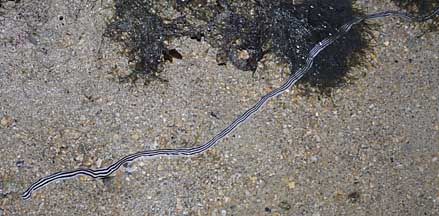
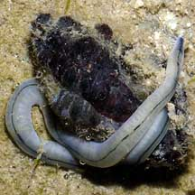
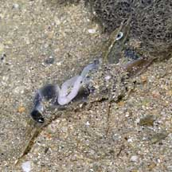

|
|
| worms text index | photo index |
| worms > Phylum Nemertea |
| Ribbon
worms Phylum Nemertea updated Oct 2016
Where seen? Ribbon worms regularly seen in coral rubble areas on many of our shores. They are more active at night. During the day, they burrow in the ground or remain in other hiding places. What are ribbon worms? Ribbon worms are unsegmented worms belonging to Phylum Nemertea. They are quite different from the segmented worms that we are more familiar with such as earthworms and bristleworms. These belong to Phylum Annelida. According to the Nemertes website, there are approximately 1,000 valid, described species of ribbon worms, with possibly several times this number that remain to be named or discovered! Ribbon worms are found in oceans, freshwaters, and also on land. Features: Ribbon worms range in length from 1mm to very long ones indeed. Some species can reach 30m! Those we have seen range from short ones 10-15cm long, longer ones 30-40cm long and some more than 1m long. Ribbon worms are NOT segmented worms. The body of a ribbon worm is rather flattened. Although it appears smooth, the body is covered with microscopic hairs (cilia). Ribbon worms may have zero to 80 'eyes' (light-dectecting sensors). Some ribbon worms produces mucus through which they move. |
 Sometimes seen swimming in the water. Tuas, May 05 |
 This one can be more than 1m long. Pulau Sudong, Dec 09 |
| What do they eat? Most ribbon
worms are voracious predators, often specialising in a particular
prey although some will eat a wide variety of prey. Ribbon worm prey
include other worms, crustaceans and molluscs. Shooting off its mouth: To capture its prey, the ribbon worm has a unique eversible proboscis at the front end of the body. This is a hollow, muscular structure that can shoot out with explosive force and is prehensile (can be used to grip) and retractable (can be pulled back). The proboscis is usually wound around the prey which is then hauled back toward the worm's mouth. Sticky mucus is secreted to help grip the prey. In one group of ribbon worms, the proboscis is armed with a piercing stylet that can inject a potent paralysing toxin. Such a worm releases the prey after injecting it, and waits for the prey to be paralysed before moving in to feed on it. If the prey is worm-shaped, it may be swallowed whole. For other awkwardly shaped prey, the worm inserts part of its digestive system into the prey and sucks up the victim's juices. The proboscis may also be used to burrow or to drag itself along the surface. Being soft and very long, ribbon worms appear defenceless. Studies, however, suggest that they harbour bacteria that produce powerful neurotoxins. These may make the worms toxic to eat. Indeed, many ribbon worms are brightly coloured, perhaps serving to warn of their distasteful nature. |
 Wrapped around a drill snail. Labrador, May 06 |
 Coiled around a paralysed shrimp. Pulau Hantu, Mar 07 |
| Ribbon worm babies: Most ribbon worms have separate genders. A few may change from being a male to a female as they get older and larger. Fertilisation is external and the young are free-swimming larvae. A few species of ribbon worms can reproduce by fragmentation. |
| Some ribbon worms on Singapore shores |

| Phylum
Nemertea recorded for Singapore from Wee Y.C. and Peter K. L. Ng. 1994. A First Look at Biodiversity in Singapore. in red are those listed among the threatened animals of Singapore from Davison, G.W. H. and P. K. L. Ng and Ho Hua Chew, 2008. The Singapore Red Data Book: Threatened plants and animals of Singapore.
|
Links
|